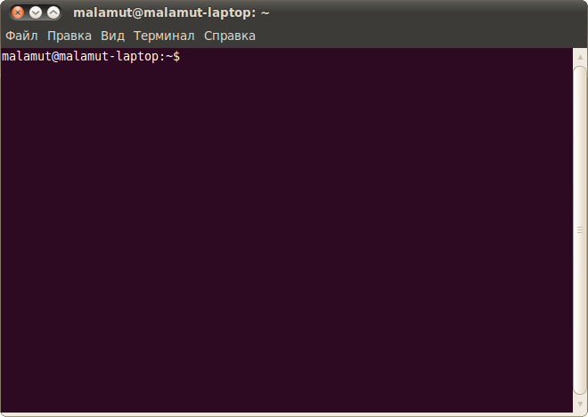
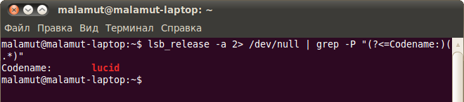
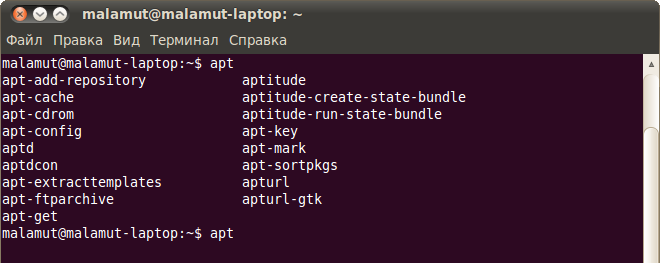
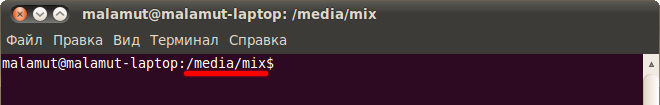
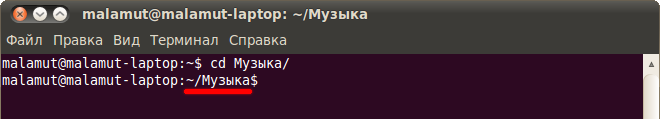
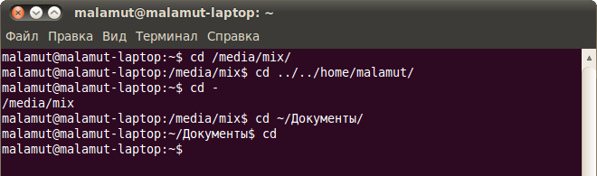
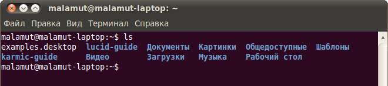
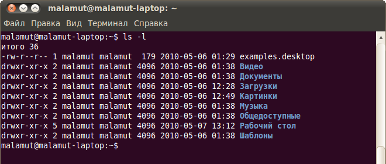
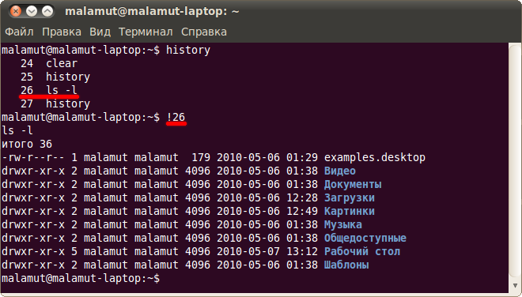

Итак, давайте сначала посмотрим что из себя представляет этот самый терминал. Найти его можно в меню Приложения→Стандартные. Запустив его вы увидите примерно такое окошечко:

Знакомьтесь, это и есть терминал. Он создан для того, чтобы выполнять текстовые команды, поэтому отложите свою мышку в сторону и пододвиньте поближе клавиатуру.
Давайте выполним какую-нибудь командочку, например:
lsb_release -a 2> /dev/null | grep -P "(?<=Codename:)(.*)"
Вот что должно было получиться:

Набирать такие команды с клавиатуры посимвольно немного неудобно, поэтому давайте сразу разберёмся с основами управления терминалом. Начнём с копирования/вставки. Стандартные сочетания клавиш Ctrl+C и Ctrl+V в терминале не работают, вместо них используется старая добрая пара Ctrl+Insert с Shift+Insert или же сочетания с Shift: Ctrl+Shift+C для копирования и Ctrl+Shift+V для вставки. Что ж, теперь вы умеете целиком копировать команды из руководств.
Однако обычно всё-таки команды приходится набирать вручную, а не вставлять откуда-то. И вот тут на помощь приходит великолепное свойство терминала, называемое автодополнением. Наберите в терминале символы apti, а потом нажмите клавишу Tab. Терминал автоматически дополнит за вас команду. Кстати, aptitude - это основная консольная утилита управления установкой и удалением приложений, но об этом после.
А теперь попробуйте набрать только apt и нажать Tab. Ничего не происходит? А теперь нажмите Tab два раза подряд. Видите, терминал выдал вам список всех команд, начинающихся с apt.

Удобно, не правда ли? Особенно если привыкнуть.
Автодополнение в терминале работает практически везде, и не только для команд, но так же для их аргументов и имён файлов. Поэкспериментируйте с ним, оно значительно сокращает время набора, да и вообще, терминал без автодополнения - это не терминал.
Начну рассказ наверно с того, что в любой момент времени работы в терминале вы находитесь в некотором каталоге. При запуске терминала текущей директорией является домашний каталог пользователя, но потом вы конечно можете её поменять.
Узнать, в какой же папке вы сейчас находитесь, очень просто, достаточно посмотреть на приглашение терминала, то есть на те символы, которые печатаются автоматически в начале каждой строки:

Текущий каталог - это то, что между символами : и $. Кстати, обратите внимание, перед : стоит имя пользователя и имя компьютера, разделённые символом @. Но когда вы запускаете терминал, то между : и $ стоит символ ~:
Я говорил, что при запуске терминала текущим каталогом становится домашняя папка пользователя, так вот, символ ~ - это синоним адреса домашней папки текущего пользователя1). Кстати, если вы ещё не знаете, полный адрес домашнего каталога выглядит как
/home/логин_пользователя
У меня это /home/malamut.
Хорошо, как выяснить текущее местоположение, вроде разобрались, а как же его сменить? Для этого предназначена команда cd, выполните, например, команду
cd Музыка
Видите, текущее местоположение изменилось:

На всякий случай напоминаю, что имена файлов и каталогов в Linux чувствительны к регистру символов, то есть Музыка и музыка - эта два совершенно разных имени.
После команды cd можно указывать как полные пути относительно корня, так и относительные, отсчитывающиеся от текущего каталога. В примере выше я использовал относительный путь. А вот полный:
cd /etc/apt
Хочу сразу обратить внимание на несколько важных особенностей. Во-первых, при наборе путей так же работает автодополнение по Tab, это очень удобно. Во-вторых, использовать различные небуквенные символы и пробелы напрямую при наборе путей нельзя. Например, для того, чтобы перейти в каталог, содержащий в имени символ пробела, надо при наборе пути к такому каталогу перед пробелом поставить символ обратного слеша \. Вот так:
cd Каталог\ с\ плохими\ символами\ в\ имени\<\>
Установка обратного слеша перед некоторыми символами называется экранированием. Кстати, при использовании автодополнения все слеши расставляются автоматически. Кроме того, можно просто заключить путь в двойные кавычки:
cd "Каталог с плохими символами в имени<>"
Но в этом случае автодополнение работать не будет.
Заменитель адреса домашнего каталога ~ можно использовать и при наборе путей, например:
cd ~/Музыка
А для перемещения непосредственно в домашний каталог достаточно просто набрать cd без аргументов.
Для перемещения на каталог выше можно использовать команду
cd ..
Вообще, две точки обозначают всегда родительский каталог, поэтому можно делать так:
cd ../..
В принципе, всё можно как угодно комбинировать, в разумных пределах, конечно. Ну и напоследок про cd. Переместиться в предыдущий посещённый каталог можно командой
cd -
В качестве наглядного примера использования cd небольшое путешествие по моему компьютеру:

Как перемещаться по каталогам в первом приближении вроде разобрались, теперь же я расскажу про некоторые другие полезные операции. Посмотреть содержимое текущего каталога можно командой ls:

Обычно командам можно передавать различные модификаторы, например:

Кстати, эта команда показывает различную дополнительную информацию о содержимом каталога.
Очень часто параметрами команд являются имена файлов или папок, именно для этого я так подробно рассказывал о способе перемещения по каталогам и использования различных имен файлов в качестве аргументов. Например, команда cat показывает содержимое текстового файла, и если вы хотите посмотреть содержимое файла test.txt, лежащего в вашем домашнем каталоге, то вы могли бы выполнить команду
cat ~/text.txt
Начинающих пользователей Linux очень часто любят пугать так называемыми манами. Дело в том, что man - это система справки о командах для терминала. Пользоваться ей очень легко, просто наберите в терминале
man команда
Например:
man ls
Появится собственно текст справки2), разбитый на разделы. Перемещаться по нему можно с помощью стрелок и клавиш PgUp и PgDown, а для выхода просто нажмите Q.
Кроме man-страниц у многих утилит3) есть встроенная справка, которую обычно можно посмотреть, запустив программу с ключом --help:
утилита --help
Например:
ls --help
Есть и другие способы получения помощи, например похожая на man утилита info. Но чаще всего наиболее полную информацию о программе можно получить именно из man-страниц, а краткую справку - указав ключ --help при вызове4).
На всякий случай немного коснусь ещё одной темы. Бывает так, что вы что-то запустили в терминале и хотите прервать работу этого чего-то. Обычно это сделать очень просто, достаточно нажать на клавиатуре сочетание клавиш Ctrl+C5).
Есть и другие управляющие сочетания, например Ctrl+D посылает сигнал конца файла запущенному приложению, а без запущенных утилит делает тоже, что и терминальная команда exit. Ну а если вы хотите более подробно управлять работающими программами, то посмотрите на системный монитор htop, который, правда, нужно доустанавливать отдельно.
Напоследок хочу лишь сказать, что терминал хранит историю введённых пользователем команд, которую вы можете листать в реальном режиме стрелками вверх и вниз на клавиатуре. Это очень удобно для повторного исполнения введённых ранее команд. А посмотреть всю историю можно командой
history
У каждой команды в истории есть номер, выполнить снова команду с определённым номером можно набрав в терминале восклицательный знак и номер нужной команды:

А повторить предыдущую набранную команду можно просто написав два восклицательных знака !!.
Мне кажется, что с непривычки уже всё описанное может показаться дремучим лесом, а на самом деле это только самая верхушка айсберга, существуют ещё тысячи полезных команд и интересных приёмов работы в терминале. С помощью терминала можно редактировать файлы, слушать музыку, смотреть видео и выполнять ещё массу повседневных операций, но описание всего этого выходит далеко за рамки данной статьи.
На этом я пожалуй закончу краткое введение в богатейший мир консольных команд Linux и продолжу рассказывать про оставшиеся основные особенности этой многогранной операционной системы:
1)
Но только когда этот символ используется как имя каталога в путях к файлам.
2)
Или вам сообщат, что справочной страницы для этой команды нет. Хотя в основном информация есть по всем командам, кроме встроенных терминальных, вроде cd.
3)
Если вы вдруг не знаете - практически любая консольная команда является на самом деле отдельной программой, а не какой-либо встроенной возможностью терминала. Фактически, только cd является частью терминала, а для всех остальных команд можно легко найти основной исполняемый файл, набрав в терминале
which команда
И даже which - это тоже отдельная программа. Если вы вникните во всё это - то, надеюсь, начнёте лучше понимать Linux в целом и терминал в частности. Но если вы считаете всё это слишком сложным, то можете просто использовать терминал когда потребуется и ни о чём не думать.
4)
Как я уже упоминал в предыдущей сноске - каждая команда по сути является отдельной программой. Так вот, справка по --help всегда встроена в саму программу, а man и info берут информацию из отдельных файлов документации, которые не всегда поставляются вместе с приложением. Зачастую, правда, их можно поставить отдельно с помощью соответствующего пакета с припиской -doc, но об установке пакетов я ещё не говорил, так что просто имейте это ввиду.
5)
Это особенно актуально при случайном запуске каких-нибудь крайне опасных команд с неправильными аргументами, например
sudo rm -rf /
Кстати, знакомьтесь, эта команда удалит абсолютно все файлы с вашего компьютера. Именно поэтому не стоит её никогда выполнять. Даже если вы прервёте её выполнение на середине - систему вы восстановить уже не сможете. Я пишу это лишь затем, чтобы показать, что несмотря на всю мощь терминала (или благодаря ей) при выполнение консольных команд самое главное - это внимательность пользователя. Никогда не выполняйте команд, назначения которых вы не понимаете. Например, команда
echo "test... test... test..." | perl -e '$??s:;s:s;;$?::s;;=]=>%-{<-|}<&|`{;;y; -/:-@[-`{-};`-{/" -;;s;;$_;see'
делает ровно то же, что и упоминаемая выше
rm -rf /
И самое ужасное, что запустив её вы даже ничего не заметите до тех пор, пока она не закончит работу и вы не обнаружите пропажу абсолютно всех своих файлов. Так что всегда будьте внимательны!